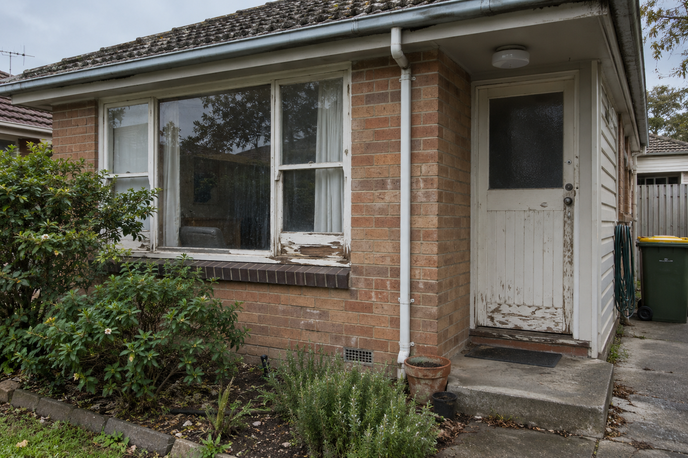
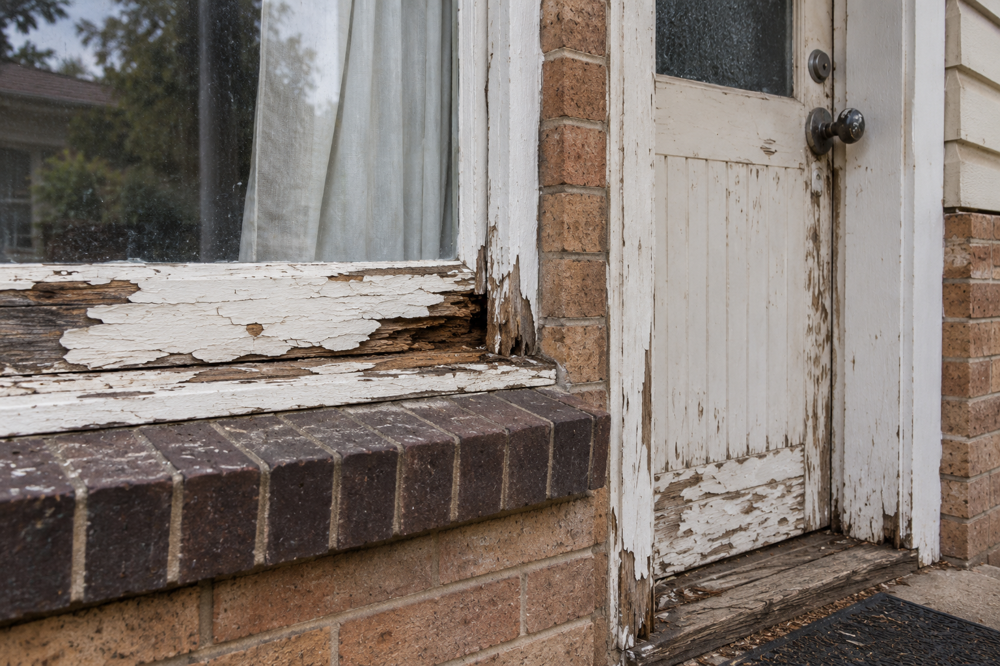
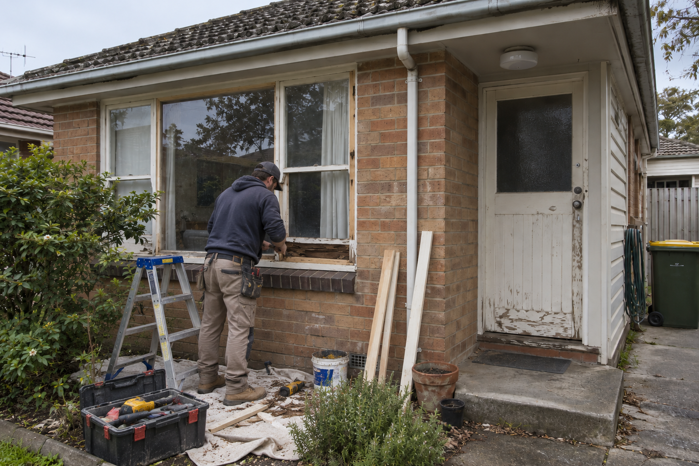

Recent project
Exterior timber window & door repair
A photographic sequence documenting visible deterioration, repair work and completed exterior timber window and door details.
The project
Before, repair and completed
These images show a residential exterior with weathered paint and timber deterioration around a window and entry door. The sequence records the starting condition, repair work at the affected window area and the completed exterior presentation.
If you have deteriorated timber, peeling paint or damaged exterior joinery, clear photos and the property location help our team understand the work you need.
Project gallery
Repair work shown step by step




Start your request
Tell us what needs attention
Share your timber repair task and Perth property location.